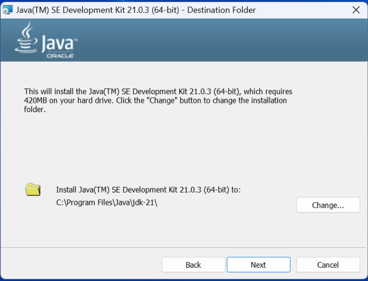
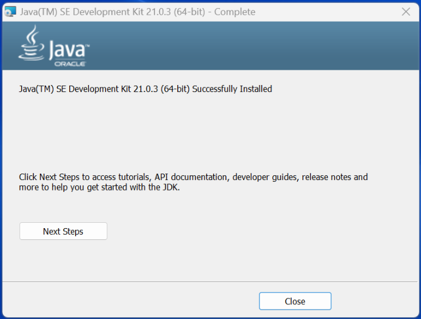
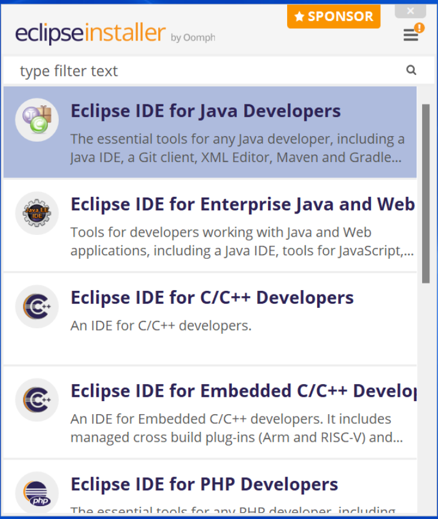
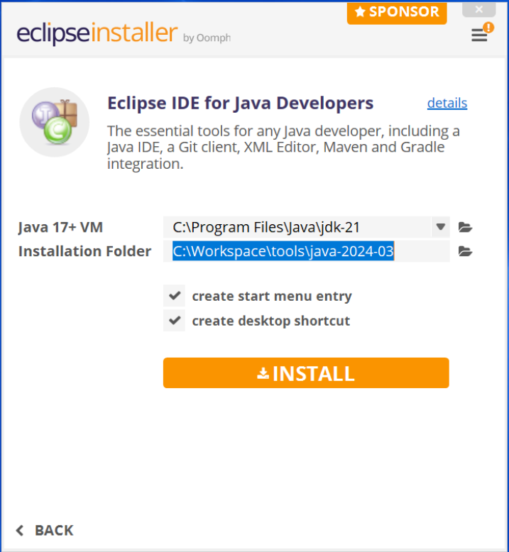
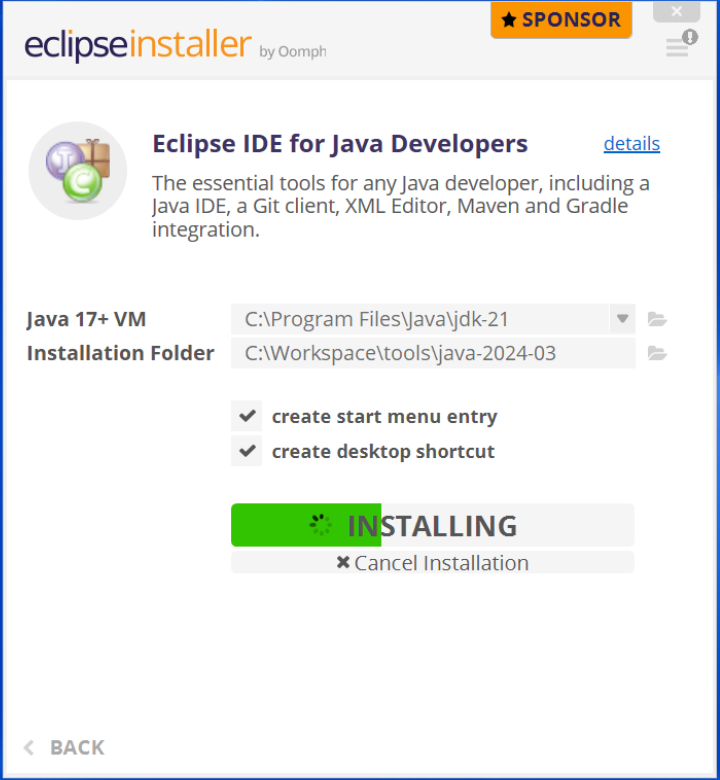
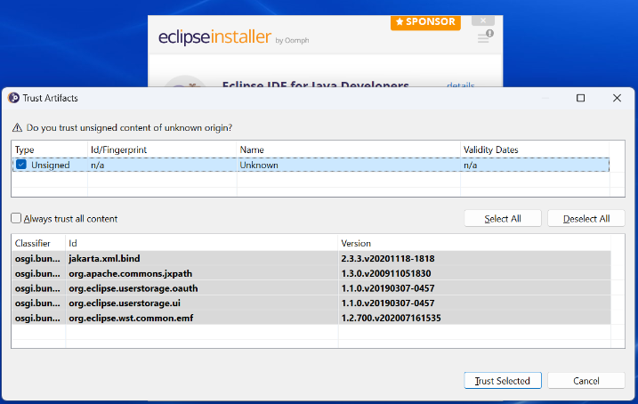
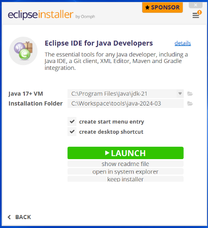
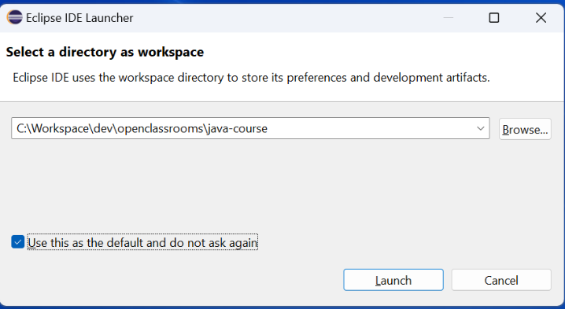

Vous venez d’intégrer CubeCrafters Interactive et vous avez la chance de rejoindre le projet Epicrafter's
Journey.
Quel
plaisir pour vous d’accomplir votre rêve d’être un développeur Java (Comment ça, j’en fais trop) !
En quelques mots, Epicrafter’s Journey est un jeu où l’imagination n’a pas de limite. Il permet au joueur de
construire
un univers selon ses souhaits en utilisant des blocs de construction. Ces blocs peuvent être variés mais ils
remplissent
tous le même objectif : réaliser l’univers de vos rêves.
CubeCrafters Interactive a lancé concrètement le développement du jeu et vous êtes assigné à l’équipe qui
développera le
code core (traduit littéralement le noyau). Ce code est essentiel car il sera utilisé dans tous les
aspects du
jeu.
Certes il ne s’agit pas de faire l’interface graphique, mais vous l’avez compris sans le code core rien n’est
possible.
Êtes-vous prêt à vous lancer ? Commençons par découvrir le langage de programmation que vous utiliserez
Apprendre à programmer en Java implique forcément de comprendre l’univers du Java ! Alors prenons le temps de
poser
le
contexte.
Java est un langage de programmation lancé en 1995 par l’entreprise Sun Microsystems. Certains d’entre vous
n’étaient
donc pas encore nés à ce moment-là
Au cours des années, Java a énormément évolué, il est aujourd’hui un des principaux langages de programmation au
monde
et son impact dépasse ce que vous pouvez imaginer ! Au moment où j’écris ces lignes, la version 22 est la
dernière
version disponible.
Le langage Java possède plusieurs caractéristiques fortes, arrêtons-nous sur ces dernières.
Cela signifie que le code écrit par les développeurs doit subir une transformationavant de pouvoir être
exécuté.
En l'occurrence, le code Java est compilé et l’on obtient du bytecode. Le bytecode est ensuite
exécutable par
une Java
Virtual Machine (JVM).
Pour pouvoir compiler un code Java, un développeur va utiliser un Java Development Kit
(JDK).
Complétons ce tableau avec le Java Runtime Environment (JRE) qui permet d’exécuter un programme

Tant le Java Development Kit que le Java Runtime Environment embarquent donc une Java Virtual Machine pour mener à bien leurs opérations.
Mais quel est l’intérêt ?
À partir du moment où un poste de travail possède une JVM (que ce soit via l’installation d’un JRE ou d’un JDK)
alors il
peut exécuter un programme codé en Java. Le langage Java est donc multiplateforme car non
dépendant d’un système
d’exploitation. L’avantage qui en résulte est la portabilité des applications
développées en Java.
Les langages de programmation compilés sont donc différents des langages de programmation interprétés
(exemple :
JavaScript, PHP).
Le typage correspond au fait de définir le type de données que l’on souhaite manipuler avant de
commencer à le
faire.
En
gros, c’est comme choisir la taille du carton que l’on va utiliser avant de commencer à ranger.
Est-ce vraiment une caractéristique propre au Java ? Cela me semble évident comme approche…
Eh bien sachez que le typage n’est pas présent dans tous les langages de programmation. Certains langages très
répandus
(comme JavaScript ou PHP) n'obligent pas à typer les données manipulées.
C’est une caractéristique forte car, croyez-moi, cela a un impact sur votre façon de développer.
Nous aurons
l’occasion
de le constater durant le cours.
Enfin j’aimerais attirer votre attention sur le fait que le langage Java est objet.
Il existe
plusieurs
paradigmes de
programmation et l’un des plus connus et répandus est la POO, c'est-à-dire la
Programmation Orientée Objet.
Ce paradigme est disponible dans de nombreux langages de programmation, citons de nouveau
JavaScript et PHP.
Mais tandis
qu’il aura un caractère optionnel pour ces derniers, dans le cadre du Java il est obligatoire en ce sens qu’on
ne peut
pas coder en Java sans faire de la POO.
Encore une fois cela aura un fort impact sur votre façon de développer. À partir de la seconde partie de cours,
nous
entrerons pleinement dans ces considérations !
Bien évidemment, il y aurait encore beaucoup à dire sur le langage de programmation Java. J’ai choisi de
m’arrêter sur
ces 3 aspects car ils sont, selon moi, les plus significatifs lorsqu’on débute.
Avant d’aller plus loin, j’ai entendu parler du fait que le langage Java est un langage lent et peu performant,
est-ce
que c’est vrai ?
Vous faites bien de poser cette question. Je peux répondre directement non ! Les
problèmes de lenteurs sont
principalement dus à la difficulté pour les développeurs d’appliquer les bonnes pratiques de programmation et
non au
langage lui-même.
Imaginez une voiture de sport qui aurait été construite avec les meilleurs composants mais où l’assemblage est
maladroit
et mal réalisé, aura-t-elle les performances attendues ? Vous connaissez la réponse, absolument pas.
C’est la même situation avec les programmes Java, le langage Java fait partie des meilleurs de notre époque mais
il faut
reconnaître que sa mise en œuvre est parfois loin d’être de qualité. Rassurez-vous, ce cours vous aidera à ne
pas tomber
dans ces travers !
C’est l’heure de se lancer dans la pratique et pour cela nous devons mettre en place notre environnement de
travail !
Cela ne vous a certainement pas échappé, dans la section précédente de ce chapitre j’ai mentionné qu’un
développeur aura
besoin pour compiler du code Java d’utiliser un JDK. Et vu que nous sommes développeurs, notre première tâche à
réaliser
sera donc d’installer un JDK sur notre poste de travail.
Et où est-ce que l’on trouve ça ?
Excellente question ! J’aimerais éviter de complexifier ce cours avec des considérations non nécessaires. Sachez
qu’il
existe plusieurs JDK et les plus connus sont certainement Oracle JDK et OpenJDK.
Pour ce cours, je souhaite utiliser Oracle JDK version 21 LTS téléchargeable à ce
lien.
Choisissez le bon fichier à télécharger selon votre système d’exploitation. Vu que je suis sur Windows, je
télécharge
l’installeur.
En l’exécutant vous accéderez à cette fenêtre :
L’écran qui suit permet de choisir où installer le JDK :
Puis il lance l’installation et une fois cette dernière terminée le dernier écran vous permet de fermer l’utilitaire d’installation :
Et pourquoi pas OpenJDK ou un autre ?
Parce que dans l’usage que l’on fera du JDK pendant ce cours, cette version Long Time Support recevra les mises
à jour
pendant plusieurs années tandis que la version LTS d’OpenJDK n’est mise à jour que pendant 6 mois.
Si vous voulez en savoir plus, n’hésitez pas à consulter cette ressource en
anglais traitant de
la version du
JDK à
utiliser.
L’installation du JDK implique l’installation d’une JVM sur votre poste de travail et vous donne accès au code
Java
natif que vous utiliserez lorsque vous coderez. Il s’agit maintenant d’installer son IDE (Integrated
Development
Environment) !
C’est quoi un IDE ?
C’est un logiciel qui vous permet d’écrire du code. Mais ce n’est pas un simple éditeur de texte, il
embarque de
nombreuses fonctionnalités qui vont vous rendre plus efficace comme, par exemple, l’autocomplétion ou la
compilation
automatique.
Il y a de nombreux IDE sur le marché. Dans l’univers Java, les plus répandus sont Eclipse IDE,
IntelIiJ IDEA et
Apache
Netbeans.
Et roulement de tambours… pour ce cours il a été choisi Eclipse IDE !
Je sais que vous vous demandez pourquoi. Tout simplement car il est Open Source, fréquemment mis à jour
et que
c’est une
référence sur le marché.
Je fais une courte aparté pour vous encourager à ne pas dépendre d’un IDE. Les compétences d’un bon développeur
ne sont
pas liées à l’IDE qu’il utilise. Bien sûr on peut avoir sa préférence, mais rien ne vous garantit de pouvoir
travailler
toujours sur le même IDE. Soyez donc flexibles sur cette question !
Vous pouvez télécharger Eclipse au lien suivant.
On va travailler avec une version légère à savoir : Eclipse IDE for Java Developers
En effet Eclipse propose plusieurs versions de son IDE car il est modulable en fonction
de vos besoins.
Vous pouvez télécharger l’installeur qui ensuite vous fera choisir la version ou bien directement la
bonne
version comme
le montre la copie écran ci-dessous :
Si vous passez par l’installer, le premier écran de celui-ci permettra de choisir Eclipse IDE for Java Developers :
Il faut ensuite indiquer le chemin vers le dossier d’installation du JDK 21 ainsi que le dossier où Eclipse sera installé.
L’installation se lance :
S’il vous demande de trust c’est-à-dire de faire confiance à un contenu non signé, dites oui :
L’installation est terminée et vous pouvez lancer Eclipse grâce au bouton Launch :
Au démarrage Eclipse vous demande de choisir l’emplacement du Workspace, ce qui correspond au dossier où il créera vos projets Java par défaut :
Un dernier clic sur Launch et c’est fini !
Je me doute que vous n’avez qu’une hâte : écrire vos premières lignes de code ! C’est parti au prochain chapitre